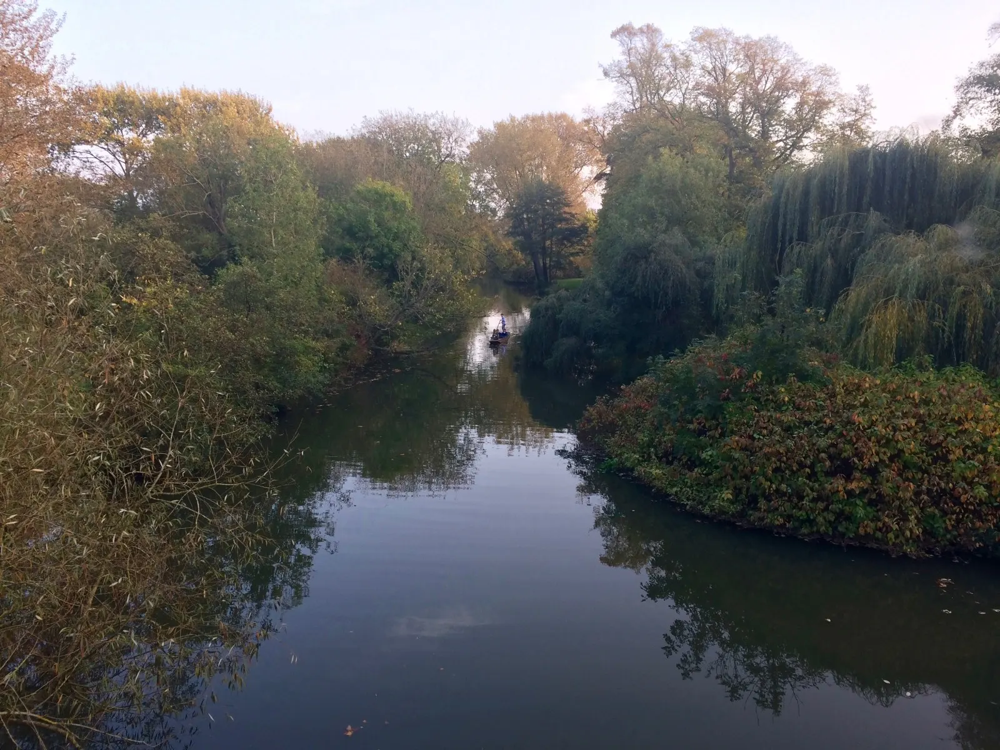
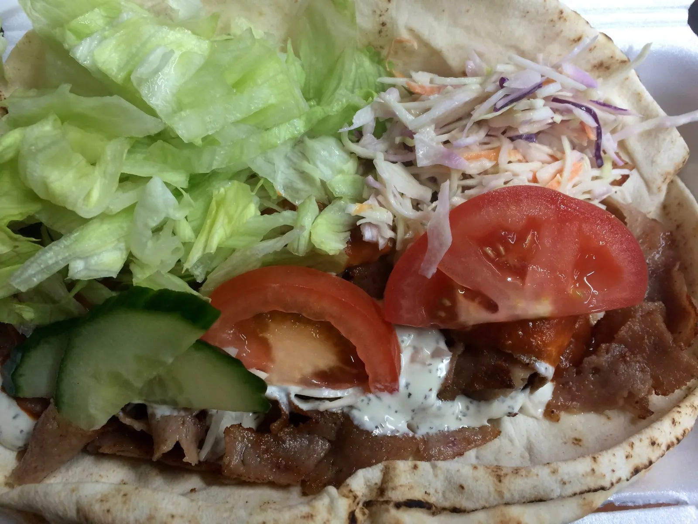
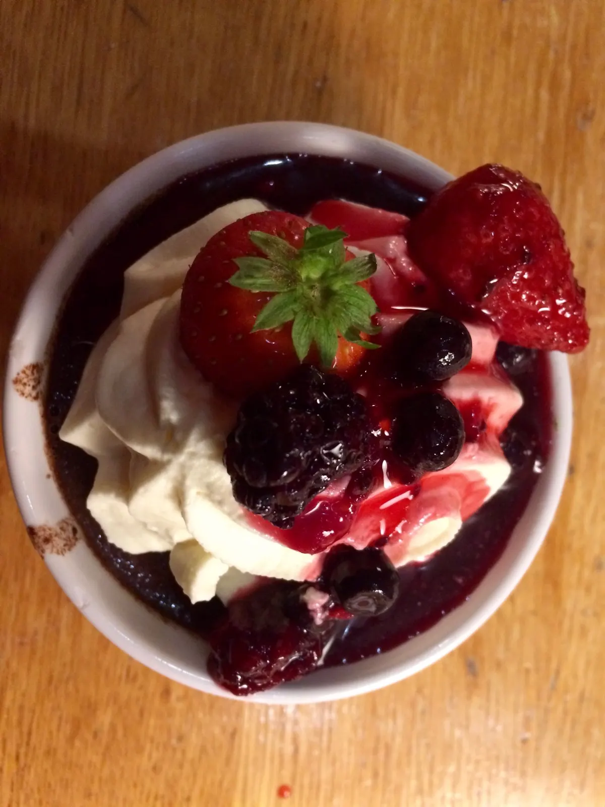

Sunday, October 15, 2017 – Random moments from this cloudy day
Scone and mandarin for breakfast
Tried to do readings, but my mind kept wandering back to London, Budapest, Vienna, the Munich Christmas markets as Frank Sinatra played out loud in my room, giving me the sudden feeling and exhilaration of Christmas.
The fall colors are gorgeous: many trees are still green, some yellow and orange, others with red hues. Went for a jog in the park.

Since Catz doesn’t serve dinner on Sundays, walked to Hassan’s with a group. Hassan’s is a popular food truck where people often go on a night out clubbing. Every time I’ve walked by there’s a line.

Monday October 16, 2017 – Eerie peach skies…hurricanes in the UK?!
Up at 5:30am for practice. Breakfast: granola bar, banana, apple, mandarin, scone.
Paper due tomorrow afternoon. Other paper I haven’t started due Wednesday noon—I hope every week won’t be like this (looking back though, it pretty much was exactly like this). Finance networking events lined up for tomorrow, lectures I want to go to but probably won’t have time for…
…I need to be more productive when working but also need more time…there’s never enough time…
…I feel like I haven’t even explored Oxford much, much less other cities and places…I’ve already been here for 2 weeks!!
It was very windy today. After lunch, the sky turned a weird dirt peach, a strange eerie color. It was as if an Instagram filter had been placed over the world. Apparently there was a hurricane in Ireland, Hurricane Ophelia, and it blew dust and sand over from the Sahara, painting the eerie color of the sky…I’ve never even heard of hurricanes in the UK.
Tuesday, October 17, 2017 – Day of walking and talking…and staying up late to finish an essay
Printed out resumes and hurried over to The Randolph Hotel a 20-minute walk away for a company presentation and networking event. I was pretty hungry and disappointed they didn’t serve lunch, but they had juice and tea and after the presentation (which was interesting and engaging) servers walked around with plates of small bites—nibbles, they are called. At the event I met Sophia, who apparently goes to Wellesley and was in my CS class last semester (oops), and with two other guys we walked to the Covered Market to a “high-value” Chinese shop where I got a large pork bun for 1.80 pounds. Hung out in a boba place but I had to leave to get a new SIM card. I’ve had enough with TIM (Italy) service.
Then headed over to the Finance Fair and gave out 1 resume out of the 7 I had printed. I got into a conversation with that one firm. The HR representative took a look at my resume, said it was what they are looking for, and told me to email her once I applied so she could keep an eye out for it and fast track it. Yes! Also picked up a pretty nice water bottle. Even better.
Walked all the way back to my room, ate a super fast dinner (not doing that ever again, as it was not a small portion), and then was out again (my feet were starting to get blisters in my flats) to the Ashmolean Museum Rooftop Restaurant (which was right next to the Randolph Hotel) for another networking event (a lot of firms come to Oxford to recruit). This was the first one I’ve been to that served wine! I took a couple sips of white wine and switched to apple juice, which better fit my tastes. They also handed around plates of small bites. We had to stand up for the presentation as there were no seats which was annoying; I asked a lot of questions about day-to-day life, banking vs debt capital markets, the different areas one can work in. But no resume was given out, no business card exchanged, didn’t learn very much, not sure if it was worth it. Now it’s 1:14 am and I still don’t have a thesis or outline ready for my paper due tomorrow at noon. Needless to say I was up a couple hours longer.
Wednesday, October 18, 2017 – Shoes, pennies, and pinkies—peculiar Oxford traditions
Finally attended my first lecture today after turning in my essay at noon (lectures are optional for visiting students). It was in the Examination School, where students take their final exams in their black and white gowns, in a large lecture hall. It was an International Relations lecture on realism. I understood maybe 5% of what the professor said—he spoke fast and had an accent, his voice echoed in the large lecture hall and I was sitting towards the back of the hall because I walked in late—so for 50 minutes I took notes from the powerpoint slide. It was quite different from a Wellesley class—there were probably over a 100 in the large room (IR is a popular course), all busy typing on their laptops as the professor breezed through the slides. My eyes wandered around, admiring the white intricately decorated ceiling, the portraits on the wall, the embroidered clock. I really wanted to take a picture but felt it would be weird.
I really wanted to try a pasty, so I got one from the Cornwall Pasty Company on Cornmarket St—the traditional one with beef and potato filling. It was filling, hot and delicious, and not very expensive.
For dinner, I walked to Gino’s Spaghetti House at Gloucester Green Square for a crew date, which is a dinner where a girls sports team eats with a guys team. Today was girls and guys tennis. But it wasn’t any normal dinner. It was by far the most interesting dinner I’ve ever been to. Once our pizzas and pastas and wine bottles came around, the quirky traditions began:
- Pennies: If someone throws a penny into your wine glass you have to down it.
- Sconces: Basically “Never have I ever”—you stand up, bang your fork on the glass to get everyone’s attention, and say, “I sconce anyone who’s done ___.” Anyone who has done that has to stand up and drink. So someone had to tell you their sconce beforehand; it’s usually directed to a particular person. Needless to say, I learned things about other people that I did not need or want to know.
- Shoes: At one point during the meal someone took off his/her shoe and put it on top of their head, and everyone followed suit—the last one to do so had to pour wine into his/her shoe and drink from it. Luckily I didn’t get wine and wasn’t playing; otherwise I would’ve been the one drinking from my shoe.
I mainly talked with the guy sitting across from me (my “date”), a visiting student from Bowdoin College. He told me what he thought of the difference between American and British culture: how Americans drink to show off their macho-ness, to prove themselves, whereas here it’s part of the culture, it’s normalized; people do it for fun and not for show. Towards the end of the dinner he accidentally knocked over my wine glass, spilling what little white wine was left into my pasta. I wasn’t planning on finishing the sample of wine I had poured for myself, but I did want the rest of my pasta…
After the meal we headed over to Vinnies, or Vincent’s Club, an exclusive sports club where blue jeans are not allowed. Basically a large house with a bar that is a classic hang out spot after crew dates. We played a trivia game with pinkies, which is a drink with 5 shots of gin and pink syrup that deceptively tastes like fruit juice. The trivia person reads a question from the (very old) trivia book. If you think you know the answer you make a bet, say 5 fingers. If you get the question right, you can distribute the 5 fingers around the group; if you give it all to one person, that person has to drink 5 fingers’ length of pinkies. If you get the question wrong, you have to drink 5 fingers’ length. It was quite entertaining to watch.
After a while Kamya, a first year at Jesus College, and I left to get ice cream at G&D’s, a popular ice cream shop. They’re famous for their Diam Crunch ice cream, so that’s the one I had. We chatted about colleges, and I told her about Wellesley. By the time we were back at Vinnies everyone had left for Park End (the club to go to on Wednesday nights), so I walked back to my dorm. But what a night.
Thursday, October 19, 2017 – Tutorials
My tutor is really good at picking apart your argument. There’s always at least one term or concept she asks me to explain and I find that I can’t. Even words you normally use but don’t think about what they actually mean, like autonomous. Plus I think I’m low-key hungover from last night; my head was feeling slow and impeded all day and I found that I struggled to form coherent thoughts on what I was arguing during my tutorials.
Attended a lecture on Social and Christian Democrat parties. I had a much better experience than in the realism one. It was in a small room, and the professor engaged the class by asking questions and asking if we had any questions. I was amazed at how intelligently the students answered his questions. He would ask a question like why has the Social Democrat party declined, and someone would immediately answer with a detailed, elaborate, elegantly worded answer.
My development economics tutorial consisted of a debate on the main reason for poverty. Is it inequality, or is it other factors like social norms and discrimination?
Every time I walk by the pond outside our dorm I wonder where the ducks go during the day. At night, though you can barely see them, you can hear the Canadian geese quacking.
Practice with the Blues team: of course the day I’m so full from bolognese pasta is the day the coach decides to start practice with sprint drills. But overall it was a good hit—feeling the strike of the ball, crisp on the strings, is one of the best feelings in the world.
Friday, October 20, 2017 – Real books!!
Windy chilly day at 55º but at least it’s predictable, unlike the east coast at times. I’m getting used to the cloudy weather; I really like cloudy weather so I don’t mind. It hasn’t rained as much as I thought it would (good thing I didn’t bring rain boots from home), though there was some rain today.
There is something exciting about going to the library to check out books. To feel the paper in your hands and read from it. A library is full of so much opportunity, to learn and engage and absorb. It’s sad I don’t take more advantage of the libraries at Wellesley, the extensive books and resources offered to us at no charge, if only we would make the effort.
Dinner: Hall with staircase. It was a packed house today! The 1.5 hours went by pretty quickly. I usually don’t feel full until dessert, after which I feel extremely full.

Dessert: rich chocolate mousse with compote (berry-flavored syrup)
Jungle-themed Entz: another fun night with interesting (and partially drunk) people dressed up in costumes with face/body makeup. I didn’t have any jungle clothing but had Sophia put some black streaks on my face that people accidentally wiped off throughout the night.
Saturday, October 21, 2017 – An afternoon of mixed doubles (w/ alc, of course)
I can’t remember the last time I woke up at 11am. But then I’ve never gone to bed at 3am either.
At 3pm I walked to the Iffley Sports Center for a mixed doubles hangout event with guys tennis. It was quite windy and chilly with spurts of drizzles, but it was lots of fun. People drank alcohol in between matches, which I thought was strange, since alcohol dehydrates you. One guy was warming up holding a racket in his right hand and a beer in his left.
My partner bailed and didn’t show, so I got to play with a different person each round, though I played with Matt twice. Matt and I rallied and played points after we were out of the tournament (which I lost on a double fault) until it was dark and we could barely see the ball. After it got dark, we somehow got a fire going, and grilled sausage with bread rolls to make hotdogs. After the sports center kicked us out, we went to a Cape of Good Hope, a pub, and [everyone but me] drank pints of beer. I met Jason and Chris, and we talked about accents, tennis, and Chinese songs, which was lots of fun.
Ended the night by calling my friend, though we talked for too long and my roommate got annoyed because she was trying to sleep.